Essential Children's Books
Hover over the book for a description. If you would like to buy one of the books, click on it (the picture links to the book on Amazon).
We teach toddlers to identify colors, numbers, shapes, and letters—but what about their feelings? By illustrating such common emotions as happiness, sadness, anger, fear, and calm, this sensitive book gently encourages young children to open up with parents, teachers, and daycare providers. And kids will LOVE the bright illustrations and amazing 3-D pop-ups on every page!
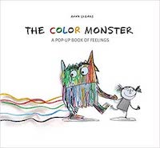
Every Sunday after church, CJ and his grandma ride the bus across town. But today, CJ wonders why they don’t own a car like his friend Colby. Why doesn’t he have an iPod like the boys on the bus? How come they always have to get off in the dirty part of town? Each question is met with an encouraging answer from grandma, who helps him see the beauty—and fun—in their routine and the world around them.
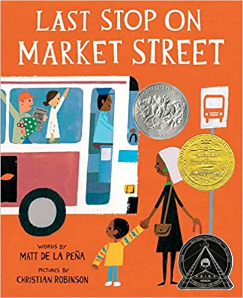
TouchThinkLearn: Featuring spreads each with raised shaped letters and objects that fit into scooped cutouts on their opposite page. Seeing the image, tracing its shape, saying its name: these modes of perception combine in a dynamic way to stimulate understanding of essential concepts. In a format unlike any other, these groundbreaking books translate abstract thought into tangible knowledge.
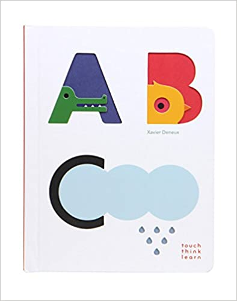
The determined story of an Ojibwe grandmother (nokomis), Josephine Mandamin, and her great love for nibi (water). Nokomis along with other women, men and youth, walk around all the Great Lakes, to raise awareness of our need to protect nibi: for future generations and for all life on the planet. By her example, she challenges us all to take up our responsibility to protect our water, the giver of life, and to protect our planet for all generations.
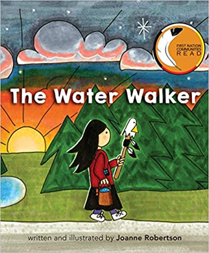
Rock is the invincible champion of the Kingdom of Backyard, but winning comes too easily. Meanwhile, two other hardcore competitors are having similar crises: Paper has vanquished all comers in the Empire of Mom’s Home Office while Scissors is the undisputed victor of the Kitchen Realm. Their yearning for worthy opponents is finally answered by a meet-up in the garage. From acclaimed, bestselling creators Drew Daywalt and Adam Rex, comes a laugh-out-loud hilarious picture book about the epic tale of the classic game Rock, Paper, Scissors.
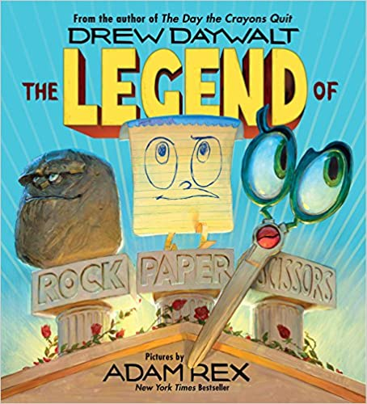
When Lola's teacher asks the students to draw a picture of where their families immigrated from, all the kids are excited. Except Lola. She can't remember The Island—she left when she was just a baby. But with the help of her family and friends, and their memories, Lola's imagination takes her on an extraordinary journey back to The Island. As she draws closer to the heart of her family's story, Lola comes to understand the truth of her abuela's words: “Just because you don't remember a place doesn't mean it's not in you.”.
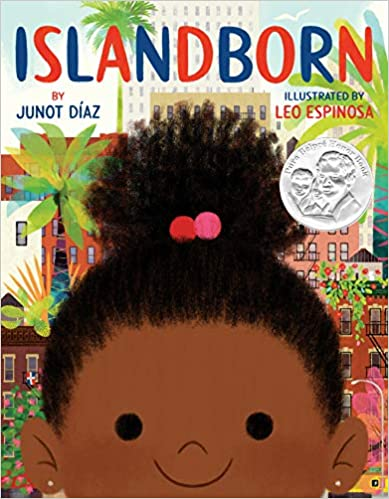
When the Authorities lock the sad little fact away, along with other facts, the world goes dark. But facts are stubborn things. With the help of a few skillful fact finders, they make a daring escape and bring truth back to brighten the world. Because after all, "a fact is a fact" and that's that!
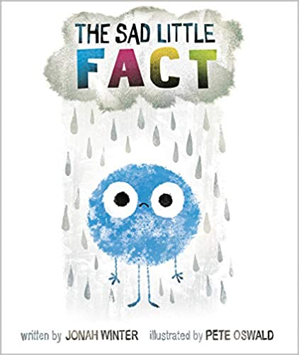
Boys will love seeing strong, happy reflections of themselves in this vibrant, rhythmic picture book celebrating a diversity of hip black hairstyles. From a 'fro-hawk to mini-twists and crisp cornrows, adorable illustrations of boys with cool curls, waves, and afros grace each page, accompanied by a positive message that will make kids cheer.
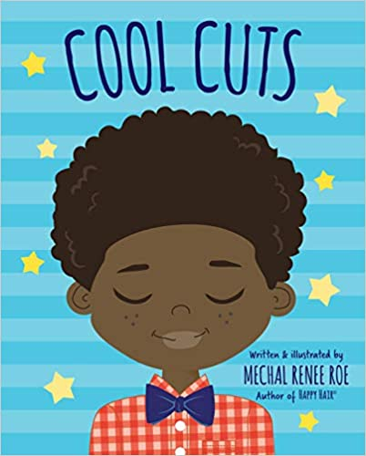
Happy Hair is a call and response picture book that promotes positive self-esteem and hair love to girls of all ages! Happy Hair covers different shades and hair types all while being fun and fashionable! This book is the foundation to building Happy Hair.
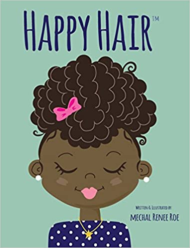
From boogie-woogie Bubble Bugs to upside-down Umbrella Bugs, this fun-filled pop, pull, and peek book makes learning the alphabet exactly eight Egg Bugs excellent.
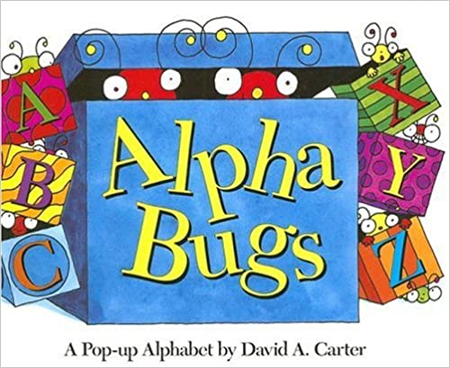
All summer, Pearl has been trying to build the perfect sandcastle, but out-of-control Frisbees and mischievous puppies keep getting in the way! Pearl and her robot friend Pascal have one last chance, and this time, they’re going to use code to get the job done. Using fundamental computer coding concepts like sequences and loops, Pearl and Pascal are able to break down their sandcastle problem into small, manageable steps. If they can create working code, this could turn out to be the best beach day ever!
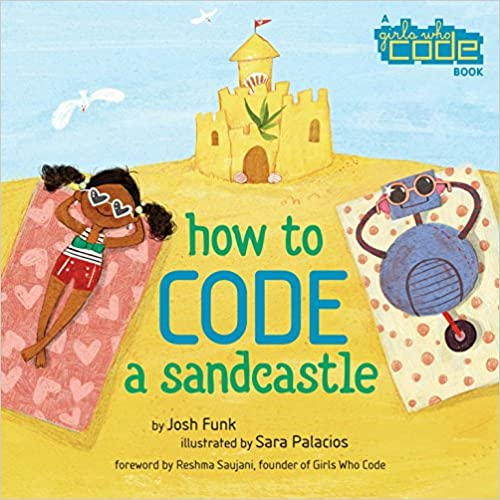
When Carmela wakes up on her birthday, her wish has already come true–she’s finally old enough to join her big brother as he does the family errands. Together, they travel through their neighborhood, until they arrive at the Laundromat, where Carmela finds a lone dandelion growing in the pavement. But before she can blow its white fluff away, her brother tells her she has to make a wish. If only she can think of just the right wish to make . . . The story is a moving ode to family, to dreamers, and to finding hope in the most unexpected places.
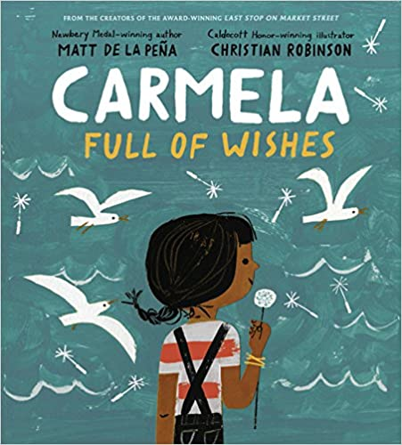